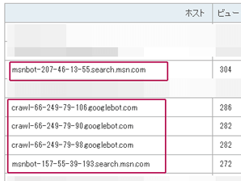
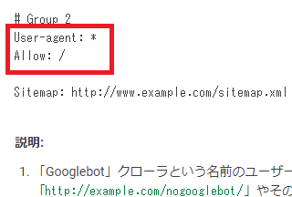
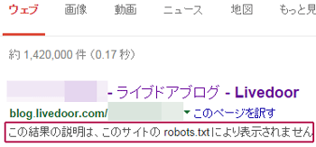

「robots.txt」の記述例とサンプル
「robots.txt」は、検索エンジンなどのロボットのアクセスを制御するためのテキストファイルのことです。検索エンジンなどのロボットはクローラー（Crawler）とも呼ばれていますが、自動化されている機械的なプログラムのため、人間による実際のアクセスではありません。
例えば、当ホームページのアクセス解析をのぞいてみると、このようなクローラーによるアクセスが確認できます。

GoogleやBingなどの検索エンジンをはじめ、海外Yahoo!やAmazon、Facebookなど様々なクローラーがサイトにやってきます。検索エンジンや広告、SEO関連、研究機関など、クローラーには約300程度の種類が存在しますが、大半は検索エンジンのアクセスが多いかと思います。
これらのクローラーが新しいページを探してサイト内をクロールし、新しいページを発見すると検索エンジンのデータベースに登録していきます。そして、登録されたページがグーグルなどの検索結果で表示され、人間による実際のアクセスへとつながっていきます。
けれども、「robots.txt」でクローラーのアクセスを拒否していると検索エンジンにインデックスされなくなってしまうため、検索結果でもヒットしなくなってしまいます。また、TwitterやFacebookなどのクローラーも拒否しているとSNSできれいに表示されないこともあります。
そのため、「robots.txt」にてクローラーのアクセスを許可しておくことをおすすめします。
「robots.txt」でクローラーのアクセスを許可する方法
デフォルトの状態でクローラーのアクセスは「許可」されているため、あえてrobots.txtを設定しなくても特に問題はありません。
■ロボットアクセスを許可する方法
クローラーのアクセスを許可する場合、以下の方法があります。
①何も設置しない → 一番多い
②Disallowのスラッシュなしで許可 → わりと多い
③Allowで明示的に許可 → 少数派
④空のrobotsファイルを作成 → 少数派
①アクセスを許可する一番確実な方法は「robots.txt」を設置しないことです。実際に大手サイトなどでrobots.txtを確認してみると、設置していないケースも多いかと思います。
②についてですが、robotstxt.orgのこちらのページの中段あたりにて、許可する場合の書き方（To allow all robots complete access）が掲載されています。一応はこちらが正式な書き方かと思われます。
つまり、全てのロボット「*」に対して、クロールを許可しない（disallow）ページは何もないという意味で、全部許可するという意味になります。
ただし、スラッシュを入れてしまうと全てのページ「/」で「許可しない」という、全く逆の拒否の意味になってしまうので注意が必要です。
③についてですが、②の方法は何かと紛らわしいため、「許可する」の(allow)を使って明示的に書いているサイトもあります。
意味は全てのロボット「*」に対して、全てのページ「/」のアクセスを許可(allow)するという意味になります。
Googleのヘルプでは、許可する際の例としてこちらの方法が紹介されています。
→ robots.txt ファイルを作成する

また、④の空のファイルを作成する方法については、上記のrobotstxt.orgには以下のような記述がありますが、空のファイルでも「許可」の意味になります。
(or just create an empty "/robots.txt" file, or don't use one at all)
いずれにしても、アクセスを許可する場合の一番確実な方法は①の何も設置しないことです。
■sitemap付きの「robots.txt」
また、sitemapの場所についてもrobots.txtに記載することができます。この場合、②の方法と合わせて、このように記述しているケースが多いです。
この「http://www.example.com/sitemap.xml」の箇所は、あなたのホームページのサイトマップのあるURLを指定します。
クローラーロボットのアクセスを拒否する方法
一方、アクセスを拒否する場合はスラッシュを入れて以下のように記述します。
意味は全てのロボット「*」に対して、全てのページ「/」へのアクセスを許可しない(disallow)という意味です。これは上記②の許可の方法と似ているため注意しましょう。
また、「User-agent」で個別にクローラーを指定して拒否する場合は以下のように記述します。
■例：GoogleとBingで「secret」のディレクトリを拒否する場合
User-agent: Googlebot
User-agent: bingbot
Disallow: /secret/
この場合、他のクローラーによるアクセスは許可されますし、Googlebotやbingbotについても/secret/以外の場所は許可されます。
このクローラーの「User-agent」のリスト一覧についてはこちらをご参照ください。
→ Webクローラーの比較一覧
ちなみに、このrobots.txtは強制ではないため、クローラーロボットによってはこの記述を完全に無視する場合もあります。概ね、大手の場合はほぼrobots.txtを尊重してくれますが、中小、個人のクローラーの場合はそもそも書いてることをちゃんと読んでくれないことも多いです。
また、Googleなどの大手検索エンジンの場合でも、まれに検索結果に表示されたり、インデックスされてしまうこともあり、検索結果にはこのような形で表示されます。

そのため、robots.txtでの拒否は不確実性が残るため、より確実に拒否するには「.haccess」で対応するとよいでしょう。「.htaccess」のAllowとDenyで強制的にクローラーを拒否する方法については、こちらのページをご参照ください。
→ クローラーアクセスの確認方法
設置する場所はルートディレクトリ
設置する場所はそのドメインやサブドメインの一番上の階層のルートディレクトリになります。
www.example.com/robots.txt
そのため、ディレクトリ下でフォルダ分けをして作成している「サブディレクトリタイプ」のサイトの場合、「robots.txt」を設置することはできません。このフォルダ分けのサイトは無料ブログなどに多いですが、ジオシティーズなどの無料ホームページスペースでも設置できないことがあります。
http://www.geocities.jp/robots.txt → 設置可能
http://www.geocities.jp/サイト名/robots.txt → ＮＧ
http://blog.livedoor.com/robots.txt → 設置可能
http://blog.livedoor.com/ブログ名/robots.txt → ＮＧ
ＮＧというか、設置しても意味がないということです。
一方、「サブドメインタイプ」の場合はルートディレクトリに設置することができます。ただし、なくても特に問題はないため、「robots.txt」を設置できないからといって何かデメリットがあるというわけでもありません。
SEO対策上、robots.txtの有無はあまり重要ではない
「robots.txt」を設置しなくても勝手にクロールはされますので、意図的にクローラーのアクセスを拒否していない限り、SEO対策上の意味はほとんどありません。
ただし、不必要なページがインデックスされている場合には、そのページへのアクセスを拒否しておくことをおすすめします。
例えば、テストで作成した意味のないページがインデックスされてしまった場合など、質の低いページがインデックスされてしまうとサイト全体にもSEO的な影響が出る可能性があります。
そのようなページへのクロールは拒否しておくとよいでしょう。
特定のページ「example.html」へのアクセスを拒否する場合は以下のように記述します。
また、特定のディレクトリ全体「/example/」を拒否する場合は以下のように記述します。
この場合、その他の拒否していないページについてはクロールされます。
また、「クローラーのアクセス回数」と「実際の検索エンジン経由のアクセス数」は比例する傾向にあります。そのため、クローラーのアクセス回数が増えれば増えるほど、結果として検索エンジン経由のアクセスアップにもつながるといえます。
何度アクセスしても新しいページがない場合、そのうちクローラーもやってこなくなってしまうため、定期的に最新情報を追加して更新しておくとよいでしょう。